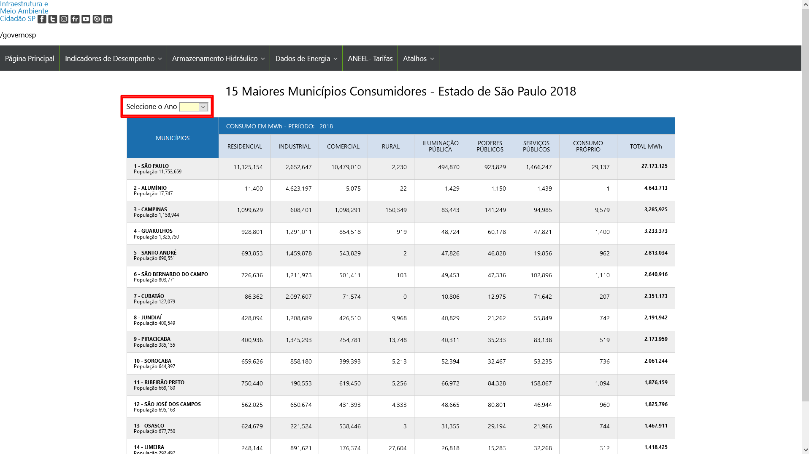
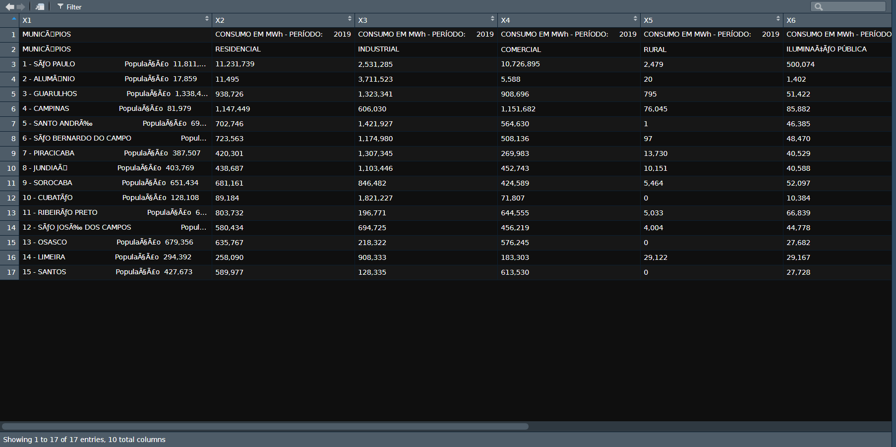
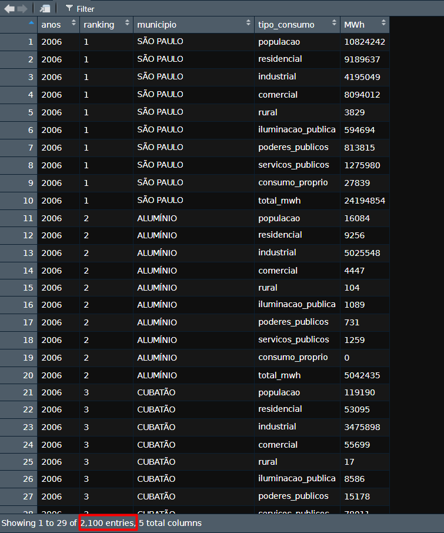
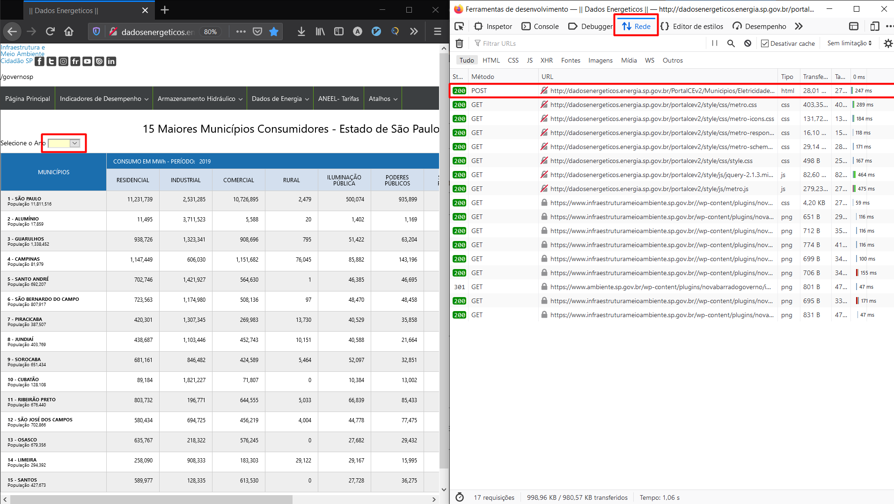
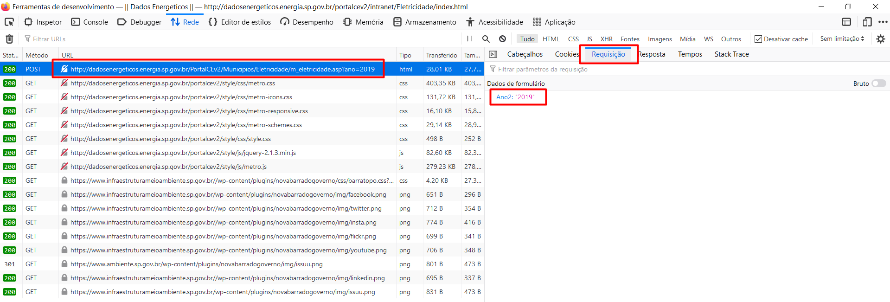
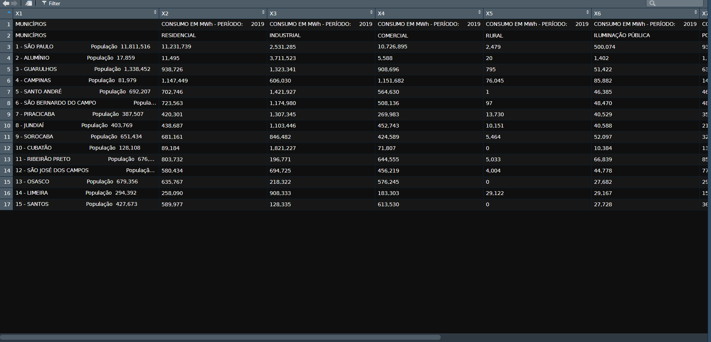
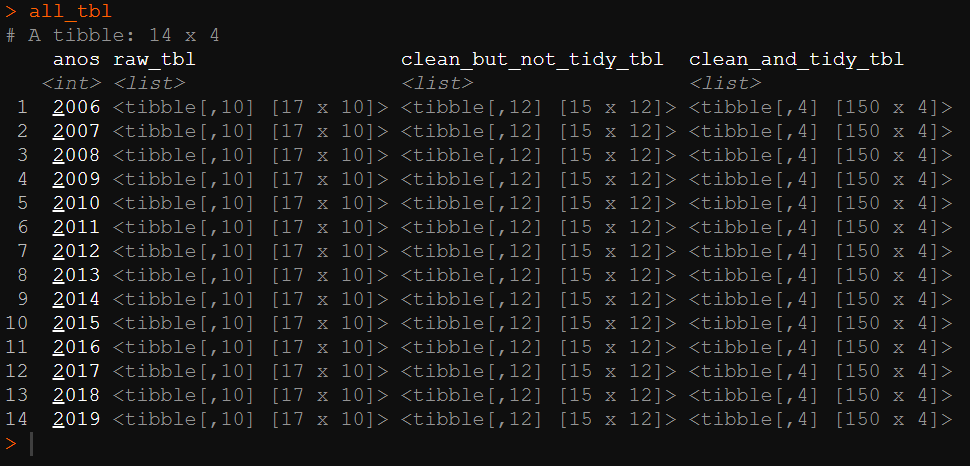
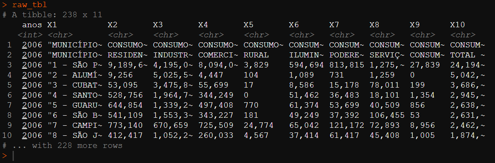
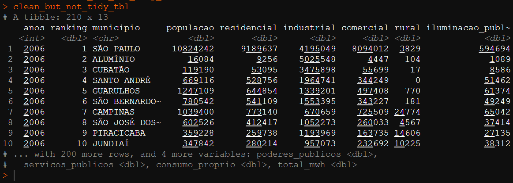
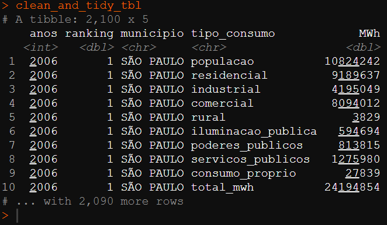

Faxina de Dados + Webscraping [R]
Este post detalha o trabalho final realizado para a conclusão do curso Faxina de Dados da Curso-R, onde foi solicitado que o trabalho tenha no mínimo:
- Leitura de uma base bruta que não esteja no formato tidy, em que cada variável é uma coluna e cada linha é uma observação.
- Manipulação alguma coluna de texto.
- Que seja salvo a base no formato tidy, na extensão .rds.
Caso queiram conferir o código final, sem precisar conferir todo o passo-a-passo abaixo, aqui está o link do script completo.
ÍNDICE
- Resumo do Caso
- Executando o webscraping
- Limpando os dados (janitor, dplyr, tidyr, stringr)
- Aplicando as funções com múltiplas datas em um pipeline (tidyr + purrr)
- Conferindo os resultados
1 - Resumo do Caso
Como encontrei muitas bases públicas relativamente limpas, fui atrás de bases que necessitavam de uma boa limpeza e assim me animei para executar um webscraping para obter os dados sujos.
Eu aproveitei também para encapsular todo o processo em funções do
purrr, trabalhando com as column-lists do universo Tidyverse. Isso permitiu tornar o código mais legível e reprodutível, além de diminuir as linhas de código ao evitar o uso de for-loops.
Então capturei os valores de consumo de energia em MWh dos 15 maiores munícipios consumidores de energia do estado de São Paulo, por ano, que estão disponíveis na seguinte página da Secretaria de Infraestrutura e Meio Ambiente de SP.

No retângulo vermelho destacado na imagem há uma caixa de seleção do ano dessa tabela que possui informações de 2006 até 2019. Portanto a base completa possui cerca de 210 observações (14x15).
Esta base pode ser considerada untidy pois temos várias colunas que representam a mesma informação do tipo de consumo. Então para transformarmos a base no formato tidy é necessário que essas colunas sejam transformadas em uma única variável chamada “tipo_consumo”.
1.1 - Base Suja Untidy
A extração crua do webscraping gera a seguinte base suja com problemas de encoding.

1.2 - Base Limpa Tidy
Após o webscraping, limpeza e tratamento dos dados, obtemos a seguinte base final no formato tidy solicitado.

2 - Executando o webscraping
2.1 - Identificando a requisição no site
Quando abrimos a seção de rede da ferramenta de desenvolvedor do navegador e selecionamos um novo ano da tabela, é possível identificar a requisição POST que retorna o html da página que contém a tabela.

Ao investigar essa requisição é possível extrair a url solicitada e os campos do formulário necessários.

2.2 - Recriando a requisição via script (httr, rvest, stringr)
Com as informações em mão, conseguimos reproduzir a mesma requisição via código da seguinte forma.
aaaa <- 2019
url <- "http://dadosenergeticos.energia.sp.gov.br/PortalCEv2/Municipios/Eletricidade/m_eletricidade.asp?ano={aaaa}"
req <- httr::POST(url = glue::glue(url),
body = list(Ano2 = aaaa),
encode = "form")O resultado é uma lista com várias informações da requisição, em que o conteúdo principal está no formato binário. Então usamos a fução rawToChar() para transformar o binário em texto obtendo assim todo o html da página.
raw_html <- rawToChar(req$content)Dentro do html existe a tag <table> que contém todos os dados que necessitamos, mas precisamos selecionar somente o texto desta tag para conseguirmos avançar com a leitura da tabela. Para isso apliquei uma expressão regex que seleciona todo o texto entre as tags <table e </table> na função gsub(). Em seguida, adicionei a string o termo <table que não foi capturado pela função anterior. Desse modo, conseguimos obter uma string html que é reconhece uma tabela com a função html_table()
text_inside_html_table <-
gsub('^.*<table\\s*|\\s* <\\/table>*$', '', raw_html) %>%
paste0("<table ", .)Em seguida apliquei as funções read_html() e html_table() do pacote rvest, extrai a tabela com o pluck() e converti em um dataframe, resultando na tabela suja apresentada na introdução do problema.
dirty_tibble <- text_inside_html_table %>%
rvest::read_html() %>%
rvest::html_table() %>%
purrr::pluck() %>%
base::as.data.frame() %>%
dplyr::as_tibble()
glimpse(dirty_tibble)## Rows: 17
## Columns: 10
## $ X1 <chr> "MUNICÃ\u008dPIOS", "MUNICÃ\u008dPIOS", "1 - SÃO PAULO\r\n ~
## $ X2 <chr> "CONSUMO EM MWh - PERÍODO: 2019", "RESIDENCIAL", "11,231,739",~
## $ X3 <chr> "CONSUMO EM MWh - PERÍODO: 2019", "INDUSTRIAL", "2,531,285", "~
## $ X4 <chr> "CONSUMO EM MWh - PERÍODO: 2019", "COMERCIAL", "10,726,895", "~
## $ X5 <chr> "CONSUMO EM MWh - PERÍODO: 2019", "RURAL", "2,479", "20", "795~
## $ X6 <chr> "CONSUMO EM MWh - PERÍODO: 2019", "ILUMINAÇÃO PÚBLICA", "500~
## $ X7 <chr> "CONSUMO EM MWh - PERÍODO: 2019", "PODERES PÚBLICOS", "935,899~
## $ X8 <chr> "CONSUMO EM MWh - PERÍODO: 2019", "SERVIÇOS PÚBLICOS", "1,554,~
## $ X9 <chr> "CONSUMO EM MWh - PERÍODO: 2019", "CONSUMO PRÓPRIO", "28,905",~
## $ X10 <chr> "CONSUMO EM MWh - PERÍODO: 2019", "TOTAL MWh", "27,511,918", "~2.3 - Solucionando os encodings (stringr)
Observando o texto html da variável raw_html, percebi que já havia esses problemas de encoding. Usei a função guess_encoding() e descobri que o encoding era o clássico UTF-8. Testei diferentes funções de conversões de encoding que encontrei na internet, mas nenhuma funcionou. Então como eram poucos casos, resolvi fazer a substituição na mão dos casos e eu adicionei essa limpeza no código da seguinte forma.
raw_html <- rawToChar(req$content) %>%
str_replace_all(., "Ã\u008d", "Í") %>%
str_replace_all(., "ÇÃ", "ÇÃ") %>%
str_replace_all(., "Ã", "Ã") %>%
str_replace_all(., "É", "É") %>%
str_replace_all(., "çã", "çã")3 - Limpando os dados (janitor, dplyr, tidyr, stringr)
Até o momento temos a seguinte tabela suja e untidy.

Prosseguindo, retirei a primeira linha que possui informações repetidas e desnecessárias, transformei a segunda linha em nome de coluna e apliquei uma limpeza dos nomes com a função clean_names() do pacote janitor.
consumo_2019 <- scrapy_consumo_eletr_ano(2019)
consumo_2019 %>%
slice(-1) %>%
janitor::row_to_names(row_number = 1) %>%
janitor::clean_names() %>%
rename(total_mwh = total_m_wh) %>%
glimpse()## Rows: 15
## Columns: 10
## $ municipios <chr> "1 - SÃO PAULO\r\n \r\n Populaçã~
## $ residencial <chr> "11,231,739", "11,495", "938,726", "1,147,449", "70~
## $ industrial <chr> "2,531,285", "3,711,523", "1,323,341", "606,030", "~
## $ comercial <chr> "10,726,895", "5,588", "908,696", "1,151,682", "564~
## $ rural <chr> "2,479", "20", "795", "76,045", "1", "97", "13,730"~
## $ iluminacao_publica <chr> "500,074", "1,402", "51,422", "85,882", "46,385", "~
## $ poderes_publicos <chr> "935,899", "1,169", "63,204", "143,196", "46,695", ~
## $ servicos_publicos <chr> "1,554,641", "1,457", "77,472", "95,976", "20,061",~
## $ consumo_proprio <chr> "28,905", "0", "1,195", "9,724", "963", "1,097", "5~
## $ total_mwh <chr> "27,511,918", "3,732,654", "3,364,850", "3,315,985"~Como a variável municipio contém também informações do ranking e população, apliquei duas vezes a função separate() para transformar a variável em 3 colunas (ranking, municipio e populacao). Para isso, usei como separador as strings " - " e “População” conforme código abaixo.
... %>%
separate(col = "municipios",
sep = "População",
into = c("municipio", "populacao")) %>%
separate(col = "municipio",
sep = " - ",
into = c("ranking", "municipio")) %>%Após as separações, temos a seguinte base.
## Rows: 15
## Columns: 12
## $ ranking <chr> "1", "2", "3", "4", "5", "6", "7", "8", "9", "10", ~
## $ municipio <chr> "SÃO PAULO\r\n \r\n ", "ALUMÍNIO~
## $ populacao <chr> " 11,811,516", " 17,859", " 1,338,452", " 81,97~
## $ residencial <chr> "11,231,739", "11,495", "938,726", "1,147,449", "70~
## $ industrial <chr> "2,531,285", "3,711,523", "1,323,341", "606,030", "~
## $ comercial <chr> "10,726,895", "5,588", "908,696", "1,151,682", "564~
## $ rural <chr> "2,479", "20", "795", "76,045", "1", "97", "13,730"~
## $ iluminacao_publica <chr> "500,074", "1,402", "51,422", "85,882", "46,385", "~
## $ poderes_publicos <chr> "935,899", "1,169", "63,204", "143,196", "46,695", ~
## $ servicos_publicos <chr> "1,554,641", "1,457", "77,472", "95,976", "20,061",~
## $ consumo_proprio <chr> "28,905", "0", "1,195", "9,724", "963", "1,097", "5~
## $ total_mwh <chr> "27,511,918", "3,732,654", "3,364,850", "3,315,985"~Em seguida, retirei as quebras de linhas e espaços vazios com a função srt_squish() do pacote stringr que remove todas essas sujeiras tanto no início quanto no fim do texto. Depois retirei as vírgulas nas variáveis de valor e, por fim, converti essas variáveis em tipos numéricos.
.... %>%
mutate(
across(ranking:populacao,
~str_squish(.)),
across(c(ranking, populacao:total_mwh),
~as.numeric(str_replace_all(., ",", "")))
)4 - Aplicando as funções com múltiplas datas em um pipeline (tidyr + purrr)
Aspirando permitir a visualização dos passos do trabalho em tabelas list-columns, separei a extração e limpeza dos dados em duas funções chamadas:
- scrapy_consumo_eletr_ano()
- clean_table()
scrapy_consumo_eletr_ano <- function(ano){
# requisicao POST
aaaa <- ano
url <- "http://dadosenergeticos.energia.sp.gov.br/PortalCEv2/Municipios/Eletricidade/m_eletricidade.asp?ano={aaaa}"
req <- httr::POST(url = glue::glue(url),
body = list(Ano2 = aaaa),
encode = "form")
# converte o binario do html para string
raw_html <- rawToChar(req$content) %>%
str_replace_all(., "Ã\u008d", "Í") %>%
str_replace_all(., "ÇÃ", "ÇÃ") %>%
str_replace_all(., "Ã", "Ã") %>%
str_replace_all(., "É", "É") %>%
str_replace_all(., "çã", "çã")
# usando regex, extrai o bloco de código equivalente a tabela do html
text_inside_html_table <-
gsub('^.*<table\\s*|\\s* <\\/table>*$', '', raw_html) %>%
paste0("<table ", .)
# converte o html da tabela em dataframe
dirty_tibble <- text_inside_html_table %>%
read_html() %>%
html_table() %>%
pluck() %>%
as.data.frame() %>%
as_tibble()
}
# Função de Limpeza da Base -----------------------------------------------
clean_table <- function(tbl){
tbl %>%
slice(-1) %>%
janitor::row_to_names(row_number = 1) %>%
janitor::clean_names() %>%
rename(total_mwh = total_m_wh) %>%
separate(col = "municipios",
sep = "População",
into = c("municipio", "populacao")) %>%
separate(col = "municipio",
sep = " - ",
into = c("ranking", "municipio")) %>%
mutate(
across(ranking:populacao,
~str_squish(.)),
across(c(ranking, populacao:total_mwh),
~as.numeric(str_replace_all(., ",", "")))
)
}Desse modo, foi possível executar as iterações com a função map() do purrr e salvar todos os resultados e passos intermediários em uma única tabela agregadora chamada all_tbl.
all_tbl <-
list("anos" = c(2006:2019)) %>%
as_tibble() %>%
mutate(
raw_tbl = purrr::map(anos,
scrapy_consumo_eletr_ano),
clean_but_not_tidy_tbl = purrr::map(raw_tbl,
clean_table),
clean_and_tidy_tbl = purrr::map(clean_but_not_tidy_tbl,
~unnest(.) %>%
pivot_longer(populacao:total_mwh,
names_to = "tipo_consumo",
values_to = "MWh")
)
)Caso não possua familiaridade com a estrutura de list-columns do tidyr, sugiro que confiram este capítulo do livro da curso-R neste link.
Eu poderia ter aplicado a função pivot_longer() na função de limpeza retornando a base já no formato tidy, porém como eu quero demonstrar as diferentes fases do tratamento, usando o purrr, eu preferi recriar uma função anônima dentro do map. Assim o leitor vivência diferentes abordagens da ferramenta.
5.0 - Conferindo os resultados
O objeto all_tbl possui a seguinte estrutura com as tabelas no formato column-list.

para extrair cada uma das tabelas intermediárias e de resultado utilizei a função unnest() da seguinte forma.
# dados brutos
raw_tbl <-
all_tbl %>%
select(anos, raw_tbl) %>%
unnest(raw_tbl)
# dados limpos, mas não tidy
clean_but_not_tidy_tbl <-
all_tbl %>%
select(anos, clean_but_not_tidy_tbl) %>%
unnest(clean_but_not_tidy_tbl)
# dados limpos e tidy
clean_and_tidy_tbl <-
all_tbl %>%
select(anos, clean_and_tidy_tbl) %>%
unnest(clean_and_tidy_tbl)Dessa forma, conseguimos conferir as 3 fases do trabalho, com os dados brutos, os dados limpos mas untidy e os dados limpos e tidy.



Por fim, salvei os resultados em .rds, conforme solicitado pela atividade.
write_rds("clean_and_tidy_tbl", clean_and_tidy_tbl)